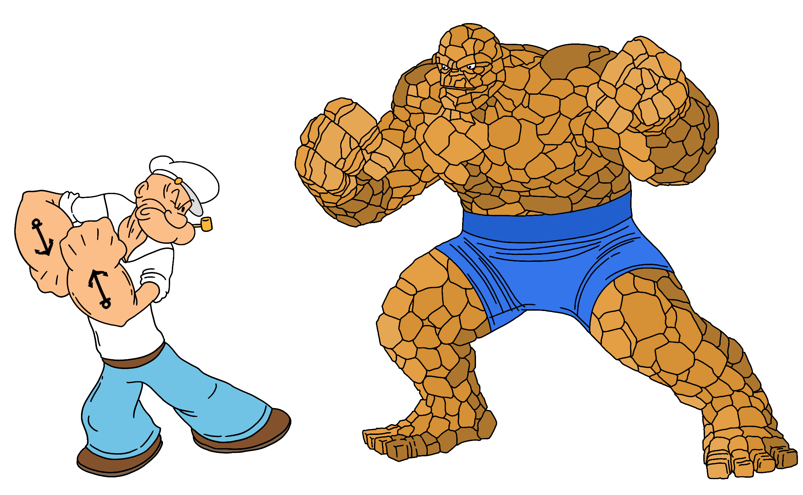

Hybrid Spatial Data Structures: Quad-KD and R-KD trees
·
Code on the Road·
#Algorithms
#Java
#Data Structures 10 min read
10 min read

Quad-KD vs R-KD trees
1. Abstract
A hybrid spatial index is a data structure that combines two or more data structures suitable for effectively storing spatial objects to improve search performance. The project report compares tree data structures kd-tree, quad-tree, and r-tree and then introduces hybrid tree structures quad-kd and r-kd trees to reduce the access time of spatial objects, specifically when the dataset has both points and polygons. Finally, the report concludes how and when hybrid spatial indexes have better search performance than other commonly used spatial indexes in a 2D space.
Index Terms—Spatial data structure, kd-Tree, quad-tree, r-tree, hybrid tree, quad-kd tree, r-kd tree, geographic information system.
2. Introduction and Survey
2.1. R-tree
R-tree is a common data-driven data structure used in GIS databases, including MySQL and PostGIS (Postgres). Still, r-trees do not guarantee good worst-case performance (primarily because of overlapping bounding rectangles) but generally perform well with real-world data. Interestingly, r-Tree’s worst-case performance for a search is “undefined”, and the average case is O(logMn), where M is the maximum number of entries in a page; Guttman says, “more than one subtree under a node visited may need to be searched, hence it is not possible to guarantee good worst-case performance.” But I would justify it by saying that the worst-case is O(n + logMn), for example, considering a lot of overlapping rectangles in the r-Tree and storing a small rectangle located in the area where all the other rectangles overlap. A search query for that rectangle is to traverse all subtrees, i.e., O(logMn) nodes and O(n) entries [8].
2.2. Quad-tree
Quad-trees are one of the space-driven data structures used to store raster datasets. But the search performance decreases for high dimensional spatial data and when the density of the points increases.

Figure 1: Quadtree
Because when the points are densely populated in certain areas, the tree is not balanced and may have a worst-case time complexity of nearly O(n), with a best-case of O(log4n) [6].
2.3. KD-tree
KD-trees are space partitioning data structures; despite the varying density of spatial points, the height of the tree is O(log n) with batch insertion; thereby, the average case time complexity of search operation is O(log n).

Figure 2: KD-tree
Furthermore, the kd-tree is a good choice for points compared to polygons (as the overlap is needed for polygons), and the performance degrades for higher dimensions (curse of dimensionality). Lastly, the worst-case time complexity to construct a static kd-tree is O(n log n), assuming an O(n) median-of-medians algorithm (to select the median at each level) [7].
2.4. Hybrid-tree
A hybrid tree is a combination of spatial data structures that combines the features of two or more spatial structures for the best interest of improving the performance.
In the real world, the spatial objects are not evenly scattered; instead, the spatial objects are a combination of complex polygons and points concentrated in some areas (varying density). Hence, one possible approach to improve the search performance is using a combination of spatial data structures (hybrid trees) that perform well with polygons and points. So far, we know that quad-trees and r-trees perform well for polygons, and kd-trees perform the best with points. Hence, using quad/r-tree for polygons and kd-tree for points is a viable option to explore with search time complexity, a combination of r-tree/quad-tree (from 2.1 and 2.2) to search for a polygon/bounding rectangle and an additional search time of kd-tree (from 2.3) for points.
The rest of the paper compares the search and construction performance of the r-tree, quad-tree, and kd-tree, then introduces and discusses the hybrid spatial data structures, quad-kd tree, and r-kd tree.

Figure 3. A representation of a Quad-KD hybrid tree structure.
3. Known results
- Sections 2.1 to 2.4 discusses the properties of the quad, kd, and r trees, which form the base for the project survey.
- The experimental results comparing quad, kd, and quad-kd trees for ten points and ten polygons in different areas in the GIS map:
- For points: The search time in the quad-kd tree is reduced by 56.6% compared to kd-tree and 45% compared to quad-tree.
- For polygons: The search time in the quad-kd tree is reduced by 71.4% compared to quad-tree and 55.6% compared to kd-tree.
- For points and polygons from a GIS map: The search time in the quad-kd tree is reduced by 67.47% compared to kd-tree and 51.3% compared to quad-tree.
- Quad-tree, r-tree and qr-tree are found to deplete search performance when the overlapping of the data increases.
- k-d-trees are elegant when bulk-loaded, and modifying or rebalancing a kd-tree is non-trivial; however, r and quad trees do not suffer from this.
While the research papers [2] [3] show that hybrid trees drastically improve the search performance of points and polygons in a 2D space. The results are either based on theoretical analysis (priori analysis) or experiments (posteriori testing) for a narrow use case considering ten points and ten polygons scattered across the map. The results do not clearly signify that the hybrid trees improve performance in all circumstances. For instance, the density, size, and quantity of the spatial data directly correlate with the search performance. Furthermore, the research paper(s) does not indicate any reference to the implementation details of the different spatial tree structures required to better understand the gravity of any optimizations.
The survey shows the need to test quad-kd trees for different input datasets (varying the densities and quantity of spatial data) and further compare with other hybrid tree(s). Not to mention, the overhead of constructing a hybrid-tree data structure is not taken into consideration.
4. Problem statement
With the ever-growing market share of the supply chain industry, spatial indexing techniques play an important role in time-critical applications and managing spatial data. For example, a common use case of in-memory spatial tree structures in geographic information systems is indexing the spatial objects on the client devices, which often have low CPU. The GIS imports a section of the spatial data and indexes them on the client device for a better user experience to access spatial information.
We know that spatial objects consist of points and polygons, and the same spatial structure does not yield the best search performance for both points and polygons. On the other hand, the current results do not depict the real-world arrangement of spatial data. Therefore, the problem statement is to take the theoretical analysis into consideration to choose a set of trees for comparison, depict a real-world spatial dataset, and validate with another hybrid tree to conclude the effect of hybrid trees to improve search performance.
5. Experiment
5.1. Assumptions
To ensure that the experiments conducted are within the timeframe. The following assumptions define the scope of the project
- Spatial data are in a 2-dimensional space.
- Spatial objects are points and rectangles (as complex polygons are represented by minimum bounding rectangles - MBRs).
- Performance comparison of search and construction/insert operations.
5.2. Data structures
The following are the set of spatial data structures compared against each other:
- R-tree
- KD-tree
- Quad-tree
- Quad-KD tree
- R-KD tree
5.3. Input dataset
As mentioned earlier, an important aspect of the experiment is depicting the real-world spatial data arrangement.
- Space of 100,000 x 100,000 units.
- A range of 1 to 80,000 points and rectangles.
- Varying densities of points and rectangles by placing a group of points and rectangles closer.
- Choosing different bounding boxes for kd-trees within the quad-tree/r-tree.
5.3. Results
Important and interesting results:
- For 2D points, r-kd hybrid trees have the best search performance, with nearly 49% and 58% reduced search time compared to quad and r-trees, respectively, and slightly better than kd-trees. R-kd trees search for points within a bounding rectangle (by grouping nearby points), unlike the kd-trees, which partition the entire area. Similarly, quad-kd trees search for the points within a bounding rectangle in a nested quadrant.
- As the number of 2D rectangles increases, the search performance of quad-tree is ~26% better than r-tree, which correlates to saying quad-kd trees are better than r-kd trees for rectangles. Furthermore, the construction/bulk-load time of the r-tree is significantly greater than the quad-tree.
- The density of points does not drastically affect the search performance when there are multiple high-density groups of points across the map.
- When the spatial data has more than 25,000 points and rectangles, quad-kd trees outperform all the other trees. In general, hybrid trees have better search performance, for instance, the quad-kd tree has nearly 68% reduced search time than the r-tree, and the r-kd tree has almost 54% reduced search time than the quad-tree. However, the construction time of the hybrid trees is higher because of the “search and insert” mechanism while inserting points within the bounding rectangle.
- Furthermore, when the dataset has less than 25,000 points and rectangles, r-kd trees have better search performance than quad-kd trees, averaging a 17% improvement.
Note: The above improvement or reduction percentages depend on the input dataset and has a precision of +/- 7%.
After conducting the experiments for several scenarios for varying densities and different quantities of points and rectangles, some of the noticeable results are as follows:
5.3.1 Points

Figure 4: Comparison of search and construct/insert performance of quad, kd, r, quad-kd, and r-kd trees containing 100 to 20,000 points.

Figure 5: Comparison of search and construct/insert performance of quad, kd, r, quad-kd, and r-kd trees containing 100 to 80,000 points.
Figure 6: Comparison of search and construct/insert performance of quad, kd, r, quad-kd, and r-kd trees containing 25,000 points with densities from 0 to 10.
5.3.2 Rectangles
When the spatial data has only rectangles, r-kd and quad-kd trees are a mere representation of r-tree and quad-tree, respectively. Hence, for rectangles, the comparison is between quad and r-tree without hybrid trees.
Figure 7: Comparison of search and construct/insert performance of quad-tree and r-tree containing 100 to 80,000 rectangles.
5.3.3 Points and Rectangles
Because of the known complexities of implementing kd-trees for polygons, the kd-tree is omitted from the comparison when the spatial data contains rectangles.
Note: For hybrid trees (quad-kd and r-kd), the points are within ~32 bounding rectangles spread across the area.
Figure 8: Comparison of search and construct/insert performance of quad, r, quad-kd, and r-kd trees containing 100 to 20,000 points and rectangles.
Figure 9: Comparison of search and construct/insert performance of quad, r, quad-kd, and r-kd trees containing 100 to 80,000 points and rectangles.
Figure 10: Comparison of search and construct/insert performance of quad, r, quad-kd, and r-kd trees containing 50,000 points with densities from 0 to 10.
Note: After trial and error, the pre-defined maximum capacity for bounding rectangles for quad and r trees is ~450, and a depth of 150 levels for quad-trees.
6. Implementation
As mentioned in section 3, the need for experimenting with different datasets depicting real-world use cases is clear. Furthermore, implementing the data structures from scratch was needed for better flexibility in testing by tweaking various input parameters. Lastly, to abide by the problem statement, exploring other data structures to form another hybrid variant to compare, sets the path to better understanding the hybrid structures altogether (concluded and explained in detail in section 5).
A high-level overview of a series of tasks completed for the project:
- Starting with the low-level design to be able to quickly onboard and compare various spatial index structures.
- Implementing tree data structures: quad-tree, r-tree, and kd-tree and the hybrid trees: quad-kd and r-kd trees.
- Generating the input dataset to compare all the five tree structures for different scenarios, some of the prominent input parameters are:
- Quantity of spatial data (Number of points and rectangles).
- Density of spatial data (how closely the data points are to each other).
- Number of bounding rectangles within the given area in hybrid trees.
- Maximum capacity of bounding rectangle/quadrant (branching factor) to decide when to split.
- Integrating with a lightweight plotting library to visualize the results.
- Creating a framework to develop and test spatial data structures, thereby making it easier for further research.
Code base: https://github.com/addu390/hybrid-spatial-index
7. Conclusion
Section 5 has the details of the various experiments conducted for all 5 data structures, which are summarized/concluded in section 5.4. However, a short conclusion specifically addressing the problem statement (section 4) is as follows:
- Hybrid data structures, the quad-kd tree, and the r-kd tree outperform quad-tree, kd-tree, and r-tree for a spatial dataset containing approximately the same number of points and polygons.
- Furthermore, the r-kd tree is a good choice if the frequency of accessing the data is higher to compensate for the construction cost of the spatial index. However, the quad-kd tree is better when dealing with larger datasets (spatial data >25,000) within the upper limits of in-memory storage constraints.
- Lastly, the future work may include exploring alternative representations of hybrid trees (example: succinct), caching models, and analysis of other fundamental operations such as nearest neighbor search, update and delete.
8. References
[1] Zhang, X and Du, Z. (2017). Spatial Indexing. The Geographic Information Science & Technology Body of Knowledge (4th Quarter 2017 Edition), John P. Wilson (ed). DOI: 10.22224/gistbok/2017.4.12
[2] Mahmood, Mahmood. (2019). A Proposed Hybrid Spatial Data Structure based on KD Tree and Quad Tree. Jokull. 69. 2-6.
[3] Bereczky, Nikolett & Duch, Amalia & Németh, Krisztián & Roura, Salvador. (2015). Quad-kd trees: A general framework for kd trees and quad trees. Theoretical Computer Science. 616. 10.1016/j.tcs.2015.12.030.
[4] Wang, W.; Zhang, Y.; Ge, G.; Jiang, Q.; Wang, Y.; Hu, L. (2021). A Hybrid Spatial Indexing Structure of Massive Point Cloud Based on Octree and 3D R*-Tree. DOI: 10.3390/app11209581
[5] Jayanaranjan Dash et al. (2015). International Journal of Computer Science and Information Technologies (IJCSIT). Vol 6 (2).
[6] Wikipedia, “Quadtree,” Nov. 06, 2019. Available: https://en.wikipedia.org/wiki/Quadtree. [Accessed Feb. 12, 2022].
[7] Wikipedia, “k-d tree,” Apr. 02, 2022. Available: https://en.wikipedia.org/wiki/K-d_tree. [Accessed Feb. 12, 2022].
[8] Wikipedia, “R-tree,” Aug. 18, 2021. Available: https://en.wikipedia.org/wiki/R-tree. [Accessed Feb. 12, 2022].

Cite this article as: Adesh Nalpet Adimurthy. (Apr 10, 2022). Hybrid Spatial Data Structures: Quad-KD and R-KD trees. PyBlog. https://www.pyblog.xyz/hybrid-spatial-index-conclusion
 #index
#index